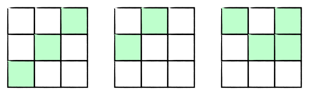
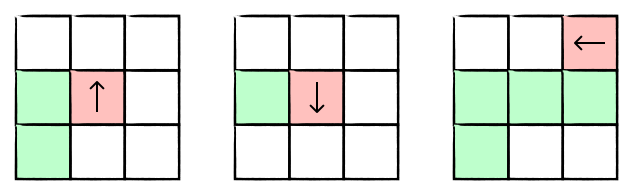

Introduction
Reinforcement learning (RL) is a subfield of artificial intelligence (AI) that teaches a machine to maximize a numerical reward through direct interaction with its environment. This is in contrast to supervised learning, which uses labeled input data to train a machine to make predictions on unseen data, and unsupervised learning, which discovers hidden patterns in unlabeled data [1]. Reinforcement learning has been applied in different contexts, such as reinforcement learning from human feedback (RLHF) used to improve large language models’ responses following users’ intent [2], autonomous vehicles [3], and achieving superhuman performance in complex games such as Go [4].
In this tutorial, we will explore the fundamentals of RL including game states, legal actions, and reward/penalty by building a Q-learning agent to play the classic Snake game from scratch.
RL Core Components
Game Rules

Valid Game States
When playing the snake game, at each time step, the information we want to know is:
- Where is the head position?
- What is the head direction?
- What is the current body segment?
- Where is the food position located, non-overlapped with the snake’s body?
The combination of all the above information constitutes a game state at a given discrete time step. Knowing all of these helps the snake make a decision on what to do next, and it enables us to design a reward system that rewards and penalizes the learning agent. For example, if the snake’s head is facing East (→), it will be penalized if it turns in the opposite direction (←) because of self-collision. Similarly, knowing the body segment also helps us detect when the snake hits the wall.
Importantly, the snake’s body shape and its head’s direction should be valid. Specifically, the snake’s body shape should consist of adjacent segments, and the snake’s head direction should be valid for its location.


Q-Learning Algorithm
Reward and Penalty (Q-Table)
You are tasked with teaching the snake how to navigate this environment so that it learns which one is a good or bad move given its current state. What would you do? Given that the Snake lives in the computational world, we need to quantify the reward and penalty. It's like giving grades to students in a class.

This table acts as the snake's memory. To build the memory on how to navigate this environment, the snake first needs to learn a lot through trials and errors. Once the memory is built, the snake can look up its memory to decide which action to take next.
Training Algorithm
The algorithm we use trains the snake to learn through trials and errors is called Q-learning:
$$Q(S_t, A_t) \leftarrow Q(S_t, A_t) + \alpha[R_{t+1} + \gamma \max_{a} Q(S_{t+1}, a) - Q(S_t, A_t)]$$
Yes, it's this scary formula that helps the snake learn! Let's unpack each symbol one by one:
- $Q(S_t, A_t)$ is the table that stores all values of state-action pairs (i.e., the snake's memory)
- $\alpha$ (0–1) is the learning rate (i.e., how much should we update the value)
- $\gamma$ (0–1) is the discounting factor (i.e., how much we value future rewards compared to immediate rewards. Higher $\gamma$ = more patient/strategic, lower $\gamma$ = more greedy/shortsighted)
- $\max_{a} Q(S_{t+1}, a)$ is the maximum value considering all possible actions in the next time step
You might ask why don't we just directly add values like -10 for penalty and +10 for reward at every time step? Why bother applying this complex algorithm?
It's all about the expected future return, not about immediate rewards. At every step, Snaky needs to answer the question: "If I choose this action now, how good will my future be on average?"
Implementation
1. Generate all valid game states
Choose grid size and snake length to see all valid (head position, head direction, body shape) configurations. Full state count includes all possible food positions.
from typing import List, Tuple, Set, Dict
def neighbors(cell: Tuple[int, int], grid_size: int):
"""Generate valid neighboring cells within the grid.
Args:
cell: (row, col) tuple representing the current cell
grid_size: size of the grid
Yields:
Tuple[int, int]: valid neighboring cells
"""
r, c = cell
# Loop through all possible movements: up, down, left, right
for dr, dc in [(-1, 0), (1, 0), (0, -1), (0, 1)]:
nr, nc = r + dr, c + dc
# Check if the new position is within the grid boundaries
if 0 <= nr < grid_size and 0 <= nc < grid_size:
yield (nr, nc)
def dir_from(from_pos: Tuple[int, int], to_pos: Tuple[int, int]) -> str:
"""Determine direction from one position to another.
Args:
from_pos: the coordinates of the starting position
to_pos: the coordinates of the target position
Returns:
str: the direction from from_pos to to_pos ('upward', 'downward', 'rightward', 'leftward')
"""
dr, dc = to_pos[0] - from_pos[0], to_pos[1] - from_pos[1]
if dr == -1:
return 'upward'
if dr == 1:
return 'downward'
if dc == 1:
return 'rightward'
return 'leftward'
def generate_connected_placements(length: int, grid_size: int) -> List[Tuple]:
"""Generate all connected placements of a snake of given length on the grid.
Args:
length: the length of the snake
grid_size: size of the grid
Returns:
List[Tuple]: list of unique snake placements (as sorted tuples of cells)
"""
cells = [(r, c) for r in range(grid_size) for c in range(grid_size)]
placements = set()
def dfs(path):
# If the path has reached the desired length, record it
if len(path) == length:
placements.add(tuple(sorted(path)))
return
# If the path is not yet complete, extend it
tail = path[-1]
for nb in neighbors(tail, grid_size):
if nb not in path:
dfs(path + [nb])
# Start DFS from each cell in the grid
for cell in cells:
dfs([cell])
return [tuple(p) for p in placements]
def head_dir_pairs_for_placement(shape_cells: List[Tuple[int, int]], grid_size: int) -> Set:
"""Generate all valid (head_pos, head_dir) pairs for a given snake shape.
Args:
shape_cells: a list of (r, c) tuples representing the snake's body cells
grid_size: size of the grid
Returns:
set: a set of (head_pos, head_dir) pairs
"""
shape_cells = set(shape_cells)
pairs = set()
# Special-case single cell: any facing is valid
if len(shape_cells) == 1:
only = next(iter(shape_cells))
for d in ['upward', 'downward', 'rightward', 'leftward']:
pairs.add((only, d))
return pairs
def dfs(path):
"""Recursive DFS to build paths through the shape cells."""
# If the path covers all shape cells, record the head and direction
if len(path) == len(shape_cells):
head, second = path[0], path[1]
pairs.add((head, dir_from(head, second)))
return
# If not complete, extend the path
tail = path[-1]
for nb in neighbors(tail, grid_size):
# Only consider neighbors that are part of the shape and not already in the path
if nb in shape_cells and nb not in path:
dfs(path + [nb])
# Start DFS from each cell in the shape
for start in shape_cells:
dfs([start])
return pairs
def generate_all_valid_states(grid_size: int, actions: List[str]) -> Dict:
"""Generate all valid game states for a given grid size.
Args:
grid_size: size of the grid
actions: list of available actions (used to initialize Q-values)
Returns:
Dict: dictionary mapping states to action dictionaries initialized to 0.0
Format: {(head_pos, head_dir, body_tuple, food_pos): {action: 0.0, ...}, ...}
"""
game_states = {}
food_positions = [(x, y) for x in range(grid_size) for y in range(grid_size)]
for length in range(1, grid_size * grid_size + 1):
placements = generate_connected_placements(length, grid_size)
for placement in placements:
pairs = head_dir_pairs_for_placement(placement, grid_size)
for head_pos, head_dir in pairs:
body_tuple = tuple(placement)
for food_pos in food_positions:
if food_pos not in placement:
state = (head_pos, head_dir, body_tuple, food_pos)
game_states[state] = {action: 0.0 for action in actions}
return game_states
2. Create a Q-Learning Agent
import random
from typing import Dict, Tuple
class QLearningAgent:
REWARD_FOOD = 10
REWARD_DEATH = -10
REWARD_STEP = 0
def __init__(self,
actions: list,
learning_rate: float,
epsilon: float,
gamma: float,
grid_size: int,
num_episodes: int):
"""Define the attributes of the learning agent
Args:
actions (list): a list of possible actions
learning_rate (float): how much to update the q-values at each step
epsilon (float): the probability of choosing a random action (exploration)
gamma (float): the discounting factor for future rewards
grid_size (int): the size of the game grid
num_episodes (int): the number of training episodes
Returns: None
"""
self.q_table = {}
self.learning_rate = learning_rate
self.epsilon = epsilon
self.gamma = gamma
self.actions = actions
self.grid_size = grid_size
self.num_episodes = num_episodes
def set_q_table(self) -> Dict:
# Initialize the Q-table with all valid game states.
self.q_table = generate_all_valid_states(self.grid_size, self.actions)
# Create a Q-table with all the state-action pairs initialized to 0.0
for action in self.actions:
for state in self.q_table:
self.q_table[state][action] = 0.0
return self.q_table
def get_q_value(self, state: Tuple, action: str) -> float:
return self.q_table.get(state, {}).get(action, 0.0)
def choose_action(self, state: Tuple, epsilon: float) -> str:
# Epsilon-greedy action selection
if random.uniform(0,1) < epsilon:
return random.choice(self.actions)
else:
# Get all the q-values (state-action) for the current state
state_actions = self.q_table.get(state, {})
# Select the action with the highest q-value
max_q = max(state_actions.values(), default=0.0)
# In case of multiple actions with the same max q-value, choose randomly among them
best_actions = [action for action, q in state_actions.items() if q == max_q]
return random.choice(best_actions) if best_actions else random.choice(self.actions)
def update_q_value(self, state: Tuple, action: str, reward: int, next_state: Tuple) -> float:
"""Update the Q-value for a given state-action pair based on the received reward and the maximum future Q-value.
Args:
state (Tuple): the current state
action (str): the action taken
reward (int): the reward received after taking the action
next_state (Tuple): the state resulting from taking the action
"""
# Initialize state in Q-table if not present
if state not in self.q_table:
self.q_table[state] = {a: 0.0 for a in self.actions}
current_q_value = self.get_q_value(state, action)
max_future_q = max(self.q_table.get(next_state, {}).values(), default=0.0)
# Q-learning formula
new_q_value = current_q_value + self.learning_rate * (reward + self.gamma * max_future_q - current_q_value)
# Update the Q-table
self.q_table[state][action] = new_q_value
return self.q_table[state][action]
3. Environment Setup
import random
import os
class Snake:
def __init__(self, initial_length = 1) -> None:
self.length = initial_length
self.just_ate_food = False
self.snake_positions = [(1, 1)]
class GameEnvironment:
def __init__(self, grid_size: int) -> None:
self.grid_size = grid_size
# Backwards-compatible alias used throughout the codebase
self.size = grid_size
self.score = 0
self.grid = [[0] * grid_size for _ in range(grid_size)]
self.food_pos = (grid_size // 2, grid_size // 2)
class GameLogic():
# make sure that the down is 1 and up is -1 for the row index
DOWN = (1, 0)
UP = (-1, 0)
LEFT = (0, -1)
RIGHT = (0, 1)
def __init__(self, grid_size, score_history = []) -> None:
self.GameEnvironment = GameEnvironment(grid_size)
self.Snake = Snake()
self.directions = [self.DOWN, self.UP, self.LEFT, self.RIGHT]
self.highest_score = self.load_high_score()
def load_high_score(self):
if os.path.exists("highscore.txt"):
with open("highscore.txt", "r") as f:
try:
return int(f.read().strip())
except ValueError:
return 0
return 0
def save_high_score(self):
if self.GameEnvironment.score > self.highest_score:
self.highest_score = self.GameEnvironment.score
with open("highscore.txt", "w") as f:
f.write(str(self.highest_score))
def place_food(self):
# Place food at a random position in the grid where the snake is not located
empty = [
(r, c)
for r in range(self.GameEnvironment.grid_size)
for c in range(self.GameEnvironment.grid_size)
if (r, c) not in self.Snake.snake_positions
]
self.GameEnvironment.food_pos = random.choice(empty)
def move(self, direction):
# Get the snake's head position (row, column)
head = self.Snake.snake_positions[0]
# Calculate the new head position based on the direction
new_head = (head[0] + direction[0], head[1] + direction[1])
# Check self-collision
if new_head in self.Snake.snake_positions[1:]:
raise Exception("Game Over: Self-collision")
# Check wall-collision
if not (0 <= new_head[0] < self.GameEnvironment.grid_size and 0 <= new_head[1] < self.GameEnvironment.grid_size):
raise Exception("Game Over: Wall-collision")
# Add the new head position to the snake's positions
self.Snake.snake_positions.insert(0, new_head)
# Check if the snake has eaten food
if new_head == self.GameEnvironment.food_pos:
self.Snake.just_ate_food = True
self.GameEnvironment.score += 1
self.place_food()
# If the snake has not just eaten food, remove the last position
if not self.Snake.just_ate_food:
self.Snake.snake_positions.pop()
else:
self.Snake.just_ate_food = False
def stop_game(self) -> int:
# update the highest score
self.save_high_score()
return self.GameEnvironment.score
def get_state(self):
return {
"snake": self.Snake.snake_positions,
"food": self.GameEnvironment.food_pos,
"score": self.GameEnvironment.score,
"grid_size": self.GameEnvironment.size
}
def render(self):
size = self.GameEnvironment.grid_size
grid = [['.'] * size for _ in range(size)]
for r, c in self.Snake.snake_positions:
grid[r][c] = 'S'
fr, fc = self.GameEnvironment.food_pos
grid[fr][fc] = 'F'
for row in grid:
print(' '.join(row))
print()
4. Set up the training loop
import random
from typing import List, Dict
import matplotlib.pyplot as plt
from tqdm import tqdm
# Hyperparameters
ACTIONS = ["turn_left", "go_straight", "turn_right", "turn_around"]
LEARNING_RATE = 0.2
GRID_SIZE = 4
NUM_EPISODES = 20000
MAX_STEPS_PER_EPISODE = 200
# Moving-average window for smoothing the curves
MOVING_AVG_WINDOW = 50
def run_training(
train_epsilon: float,
gamma: float,
num_episodes: int = NUM_EPISODES,
grid_size: int = GRID_SIZE,
learning_rate: float = LEARNING_RATE,
) -> List[float]:
"""
Train a fresh Q-learning agent for a given training epsilon and,
after each training episode, run a separate evaluation episode
with epsilon = 0.0. Returns the per-episode evaluation scores
over num_episodes.
This mirrors the logic in train.py but without visualization or Q-table I/O.
Training uses epsilon = train_epsilon, evaluation uses epsilon = 0.0
(pure exploitation of the learned Q-table).
"""
agent = QLearningAgent(
actions=ACTIONS,
learning_rate=learning_rate,
epsilon=train_epsilon,
gamma=gamma,
grid_size=grid_size,
num_episodes=num_episodes,
)
# Start from a fresh Q-table for each training run
agent.set_q_table()
eval_scores: List[float] = []
for episode in tqdm(
range(num_episodes), desc=f"Training (epsilon={train_epsilon})"
):
# -------- Training episode (epsilon = train_epsilon) --------
game = GameLogic(grid_size=agent.grid_size)
game.place_food()
steps = 0
while True:
steps += 1
current_state = get_state_representation(game)
action = agent.choose_action(current_state, train_epsilon)
current_dir = get_current_direction(game.Snake.snake_positions)
direction = get_direction(action, current_dir)
try:
old_score = game.GameEnvironment.score
game.move(direction)
new_score = game.GameEnvironment.score
# Reward structure consistent with train.py
if new_score > old_score:
reward = 10 # Ate food
else:
reward = -0.1 # Normal step
next_state = get_state_representation(game)
except Exception as e:
if "Wall" in str(e):
reward = -10
elif "Self" in str(e):
reward = -10
else:
reward = -10
next_state = current_state # Terminal state
agent.update_q_value(current_state, action, reward, next_state)
break
# Update Q-value for non-terminal transition
agent.update_q_value(current_state, action, reward, next_state)
if steps >= MAX_STEPS_PER_EPISODE:
break
# -------- Evaluation episode (epsilon = 0.0, pure exploitation) --------
eval_game = GameLogic(grid_size=agent.grid_size)
eval_game.place_food()
eval_steps = 0
while True:
eval_steps += 1
eval_state = get_state_representation(eval_game)
eval_action = agent.choose_action(eval_state, 0.0)
eval_current_dir = get_current_direction(eval_game.Snake.snake_positions)
eval_direction = get_direction(eval_action, eval_current_dir)
try:
eval_game.move(eval_direction)
except Exception:
# Game over; record evaluation score and stop this eval episode
break
if eval_steps >= MAX_STEPS_PER_EPISODE:
break
eval_scores.append(eval_game.GameEnvironment.score)
return eval_scores
def moving_average(values: List[float], window_size: int) -> List[float]:
"""
Compute a simple moving average over the given values.
The output list has the same length as the input list.
"""
if not values or window_size <= 1:
return values
averaged: List[float] = []
cumulative_sum = 0.0
for i, v in enumerate(values):
cumulative_sum += v
if i >= window_size:
cumulative_sum -= values[i - window_size]
averaged.append(cumulative_sum / window_size)
else:
averaged.append(cumulative_sum / (i + 1))
return averaged
def plot_learning_trajectories(results: Dict[str, List[float]]) -> None:
"""
Plot smoothed average score per episode for each epsilon regime.
"""
episodes = list(range(1, NUM_EPISODES + 1))
plt.figure(figsize=(10, 6))
for label, scores in results.items():
smoothed = moving_average(scores, MOVING_AVG_WINDOW)
plt.plot(episodes, smoothed, label=label)
plt.xlabel("Episode")
plt.ylabel("Average score per episode (moving average)")
plt.title(
f"Snake Q-learning: Learning trajectories over {NUM_EPISODES} episodes\n"
f"(window size = {MOVING_AVG_WINDOW})"
)
plt.legend()
plt.grid(True, alpha=0.3)
plt.tight_layout()
plt.savefig("learning_trajectories.png", dpi=200)
# Uncomment the next line if you want an interactive window when running locally
# plt.show()
def main() -> None:
# Make runs reproducible
random.seed(42)
epsilon_configs = {
"Pure exploitation (epsilon=0.0)": 0.0,
"Pure exploration (epsilon=1.0)": 1.0,
"Mixed (epsilon=0.1)": 0.1,
}
results: Dict[str, List[float]] = {}
for label, eps in epsilon_configs.items():
scores = run_training(train_epsilon=eps, gamma=0.5, num_episodes=NUM_EPISODES)
results[label] = scores
plot_learning_trajectories(results)
if __name__ == "__main__":
main()
import random
import os
class Snake:
def __init__(self, initial_length = 1) -> None:
self.length = initial_length
self.just_ate_food = False
self.snake_positions = [(1, 1)]
class GameEnvironment:
def __init__(self, grid_size: int) -> None:
self.grid_size = grid_size
# Backwards-compatible alias used throughout the codebase
self.size = grid_size
self.score = 0
self.grid = [[0] * grid_size for _ in range(grid_size)]
self.food_pos = (grid_size // 2, grid_size // 2)
class GameLogic():
# make sure that the down is 1 and up is -1 for the row index
DOWN = (1, 0)
UP = (-1, 0)
LEFT = (0, -1)
RIGHT = (0, 1)
def __init__(self, grid_size, score_history = []) -> None:
self.GameEnvironment = GameEnvironment(grid_size)
self.Snake = Snake()
self.directions = [self.DOWN, self.UP, self.LEFT, self.RIGHT]
self.highest_score = self.load_high_score()
def load_high_score(self):
if os.path.exists("highscore.txt"):
with open("highscore.txt", "r") as f:
try:
return int(f.read().strip())
except ValueError:
return 0
return 0
def save_high_score(self):
if self.GameEnvironment.score > self.highest_score:
self.highest_score = self.GameEnvironment.score
with open("highscore.txt", "w") as f:
f.write(str(self.highest_score))
def place_food(self):
# Place food at a random position in the grid where the snake is not located
empty = [
(r, c)
for r in range(self.GameEnvironment.grid_size)
for c in range(self.GameEnvironment.grid_size)
if (r, c) not in self.Snake.snake_positions
]
self.GameEnvironment.food_pos = random.choice(empty)
def move(self, direction):
# Get the snake's head position (row, column)
head = self.Snake.snake_positions[0]
# Calculate the new head position based on the direction
new_head = (head[0] + direction[0], head[1] + direction[1])
# Check self-collision
if new_head in self.Snake.snake_positions[1:]:
raise Exception("Game Over: Self-collision")
# Check wall-collision
if not (0 <= new_head[0] < self.GameEnvironment.grid_size and 0 <= new_head[1] < self.GameEnvironment.grid_size):
raise Exception("Game Over: Wall-collision")
# Add the new head position to the snake's positions
self.Snake.snake_positions.insert(0, new_head)
# Check if the snake has eaten food
if new_head == self.GameEnvironment.food_pos:
self.Snake.just_ate_food = True
self.GameEnvironment.score += 1
self.place_food()
# If the snake has not just eaten food, remove the last position
if not self.Snake.just_ate_food:
self.Snake.snake_positions.pop()
else:
self.Snake.just_ate_food = False
def stop_game(self) -> int:
# update the highest score
self.save_high_score()
return self.GameEnvironment.score
def get_state(self):
return {
"snake": self.Snake.snake_positions,
"food": self.GameEnvironment.food_pos,
"score": self.GameEnvironment.score,
"grid_size": self.GameEnvironment.size
}
def render(self):
size = self.GameEnvironment.grid_size
grid = [['.'] * size for _ in range(size)]
for r, c in self.Snake.snake_positions:
grid[r][c] = 'S'
fr, fc = self.GameEnvironment.food_pos
grid[fr][fc] = 'F'
for row in grid:
print(' '.join(row))
print()
import random
from typing import List, Dict
import matplotlib.pyplot as plt
from tqdm import tqdm
# Hyperparameters
ACTIONS = ["turn_left", "go_straight", "turn_right", "turn_around"]
LEARNING_RATE = 0.2
GRID_SIZE = 4
NUM_EPISODES = 20000
MAX_STEPS_PER_EPISODE = 200
# Moving-average window for smoothing the curves
MOVING_AVG_WINDOW = 50
def run_training(
train_epsilon: float,
gamma: float,
num_episodes: int = NUM_EPISODES,
grid_size: int = GRID_SIZE,
learning_rate: float = LEARNING_RATE,
) -> List[float]:
"""
Train a fresh Q-learning agent for a given training epsilon and,
after each training episode, run a separate evaluation episode
with epsilon = 0.0. Returns the per-episode evaluation scores
over num_episodes.
This mirrors the logic in train.py but without visualization or Q-table I/O.
Training uses epsilon = train_epsilon, evaluation uses epsilon = 0.0
(pure exploitation of the learned Q-table).
"""
agent = QLearningAgent(
actions=ACTIONS,
learning_rate=learning_rate,
epsilon=train_epsilon,
gamma=gamma,
grid_size=grid_size,
num_episodes=num_episodes,
)
# Start from a fresh Q-table for each training run
agent.set_q_table()
eval_scores: List[float] = []
for episode in tqdm(
range(num_episodes), desc=f"Training (epsilon={train_epsilon})"
):
# -------- Training episode (epsilon = train_epsilon) --------
game = GameLogic(grid_size=agent.grid_size)
game.place_food()
steps = 0
while True:
steps += 1
current_state = get_state_representation(game)
action = agent.choose_action(current_state, train_epsilon)
current_dir = get_current_direction(game.Snake.snake_positions)
direction = get_direction(action, current_dir)
try:
old_score = game.GameEnvironment.score
game.move(direction)
new_score = game.GameEnvironment.score
# Reward structure consistent with train.py
if new_score > old_score:
reward = 10 # Ate food
else:
reward = -0.1 # Normal step
next_state = get_state_representation(game)
except Exception as e:
if "Wall" in str(e):
reward = -10
elif "Self" in str(e):
reward = -10
else:
reward = -10
next_state = current_state # Terminal state
agent.update_q_value(current_state, action, reward, next_state)
break
# Update Q-value for non-terminal transition
agent.update_q_value(current_state, action, reward, next_state)
if steps >= MAX_STEPS_PER_EPISODE:
break
# -------- Evaluation episode (epsilon = 0.0, pure exploitation) --------
eval_game = GameLogic(grid_size=agent.grid_size)
eval_game.place_food()
eval_steps = 0
while True:
eval_steps += 1
eval_state = get_state_representation(eval_game)
eval_action = agent.choose_action(eval_state, 0.0)
eval_current_dir = get_current_direction(eval_game.Snake.snake_positions)
eval_direction = get_direction(eval_action, eval_current_dir)
try:
eval_game.move(eval_direction)
except Exception:
# Game over; record evaluation score and stop this eval episode
break
if eval_steps >= MAX_STEPS_PER_EPISODE:
break
eval_scores.append(eval_game.GameEnvironment.score)
return eval_scores
def moving_average(values: List[float], window_size: int) -> List[float]:
"""
Compute a simple moving average over the given values.
The output list has the same length as the input list.
"""
if not values or window_size <= 1:
return values
averaged: List[float] = []
cumulative_sum = 0.0
for i, v in enumerate(values):
cumulative_sum += v
if i >= window_size:
cumulative_sum -= values[i - window_size]
averaged.append(cumulative_sum / window_size)
else:
averaged.append(cumulative_sum / (i + 1))
return averaged
def plot_learning_trajectories(results: Dict[str, List[float]]) -> None:
"""
Plot smoothed average score per episode for each epsilon regime.
"""
episodes = list(range(1, NUM_EPISODES + 1))
plt.figure(figsize=(10, 6))
for label, scores in results.items():
smoothed = moving_average(scores, MOVING_AVG_WINDOW)
plt.plot(episodes, smoothed, label=label)
plt.xlabel("Episode")
plt.ylabel("Average score per episode (moving average)")
plt.title(
f"Snake Q-learning: Learning trajectories over {NUM_EPISODES} episodes\n"
f"(window size = {MOVING_AVG_WINDOW})"
)
plt.legend()
plt.grid(True, alpha=0.3)
plt.tight_layout()
plt.savefig("learning_trajectories.png", dpi=200)
# Uncomment the next line if you want an interactive window when running locally
# plt.show()
def main() -> None:
# Make runs reproducible
random.seed(42)
epsilon_configs = {
"Pure exploitation (epsilon=0.0)": 0.0,
"Pure exploration (epsilon=1.0)": 1.0,
"Mixed (epsilon=0.1)": 0.1,
}
results: Dict[str, List[float]] = {}
for label, eps in epsilon_configs.items():
scores = run_training(train_epsilon=eps, gamma=0.5, num_episodes=NUM_EPISODES)
results[label] = scores
plot_learning_trajectories(results)
if __name__ == "__main__":
main()
Results and Takeaways
After training for several thousand episodes, our Q-learning agent should learn to navigate the snake toward food while avoiding walls and its own tail. Performance will depend on state representation and hyperparameters like learning rate and exploration rate.
This simple setup lays the groundwork for more advanced methods like Deep Q-Networks (DQN), which we'll explore in the Flappy Bird tutorial.
References
- Ghasemi, M. and Ebrahimi, F. (2024). Reinforcement learning in artificial intelligence. Artificial Intelligence Review.
- Ouyang, L., et al. (2022). Training language models to follow instructions with human feedback. Advances in Neural Information Processing Systems, 35.
- Wang, Y., et al. (2023). Reinforcement learning for autonomous driving: A survey. IEEE Transactions on Intelligent Transportation Systems.
- Silver, D., et al. (2016). Mastering the game of Go with deep neural networks and tree search. Nature, 529(7587), 484-489.